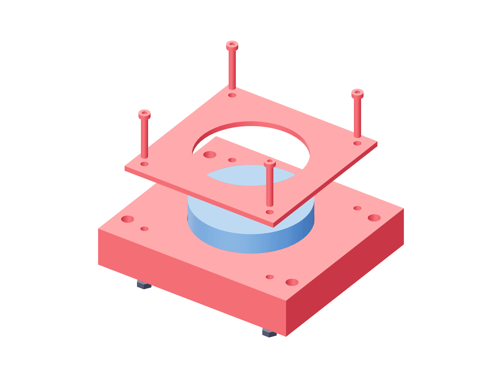

Observation / lens modules149 / 179
Capture the lens by its metal rim
The cassette holds a Raynox DCR-250 by its 53 mm outer metal rim. The rear projection and clear optical apertures stay unobstructed.
AddPer view: lens-cassette · lens-retainer · DCR-250 · 4 M3 × 20 / captive nuts · no head washers · 0.40 mm lens-shim where needed
Tools / setupSmall hex · clean soft support · no camera power

- Remove the four local pocket-ceiling supports through their open rear pockets. Verify flat nut seating, then insert the four captive nuts.
- Place the lens rim into its 53.4 mm pocket with the rear projection toward the aperture.
- Print each 0.40 mm shim as two 0.20 mm layers. Four supplied shims include setup spares; use only where measured rim clearance requires, then place the retainer.
- Use M3 × 20 without head washers. Start all four screws and seat opposite pairs gently without squeezing the lens assembly.
Ready when
The lens is retained without rim distortion; apertures stay clear and all four screw tips end inside the rear plane, with full captive-nut engagement. A forced rim fit or retainer loading glass fails the optical mount. Correct the cassette/shim fit before using the lens.